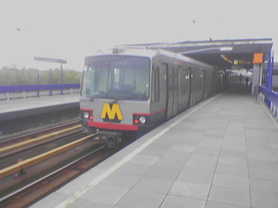
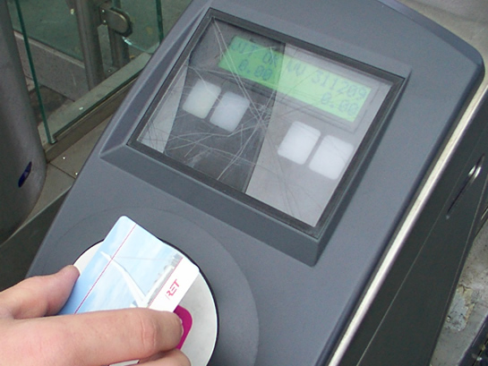
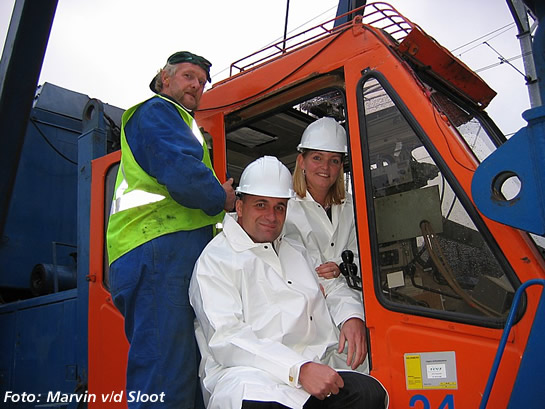
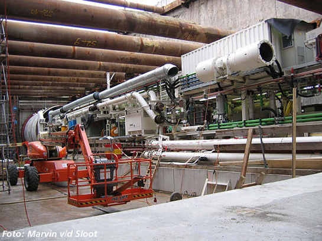

5217 op transport naar CW Kleiweg en meer nieuws...
- zondag 07 december 2008 17:07
- Geschreven door Joachim
Rijtuig 5217 wordt morgen overgebracht van lijnwerkplaats Waalhaven naar Centrale Werkplaats Kleiweg, via de sporen van NS. Hoe laat het transport plaatsvindt, is niet bekend. De 5217 raakte op 25 oktober zwaar beschadigd bij een aanrijding met een vrachtwagen op de President Rooseveltweg in Rotterdam Ommoord. Het schadeherstel duurt naar verwachting tot het einde van het jaar.
Op 4 november werd rijtuig 5217 door de rijtuigen 5228 en 5256 naar remise Waalhaven overgebracht, tot op heden verblijft het rijtuig buiten, op spoor 127, in afwachting van het transport.

Rijtuig 5217 met de daarvoor gekoppelde 5228 en 5256 passeren station Maashaven, op weg richting lijnwerkplaats Waalhaven.
 Bekijk nieuwsitem "5217 ontspoort na aanrijding met vrachtwagen."
Bekijk nieuwsitem "5217 ontspoort na aanrijding met vrachtwagen."
5264
Rijtuig 5264 is overgebracht van lijnwerkplaats Waalhaven naar remise 's-Gravenweg. Hier zal de downchopper-installatie gedemonteerd worden. Of het rijtuig terug in de dienst gaat voor de grote ombouw in januari, is nog niet bekend. Het rijtuig werd op 4 november retour gestuurd met de 5228 en de 5256, die daarvoor de 5217 naar lijnwerkplaats Waalhaven hadden overgebracht.
Rijtuig 5264 werd in de zomermaanden gebruikt voor testdoeleinden op het toekomstige Randstadrail-tracé tussen Rotterdam Hofplein en Den Haag Centraal v.v.
Grootschalige ontruimingsoefening
Op donderdag 17 november a.s. zal er een ontruimingsoefening plaatsvinden op metrostation Stadhuis. De oefening vindt plaats tussen 13.00 uur en 15.00 uur. Er is dan geen metroverkeer mogelijk tussen het Centraal Station en metrostation Beurs. Ook bovengronds ligt het verkeer gedurende de oefening stil. Bussen en trams worden omgeleid en alleen bestemmingsverkeer mag zich begeven naar het gebied rondom metrostation Stadhuis. Reizigers worden van te voren duidelijk op de hoogte gesteld van de oefening, om hinder tijdens het reizen zoveel mogelijk te voorkomen.
Wervingsactie OV-Chipkaarten
Afgelopen woensdag vond er een grote wervingsactie plaats voor gebruikers van anonieme OV-Chipkaarten. Reizigers konden op de stations Marconiplein, Kralingse Zoom, Zuidplein en Centraal Station een flyer meenemen en deze invullen. Een ingevulde en ingeleverde flyer resulteerde in het verkrijgen van een anonieme OV-Chipkaart t.w.v. €7,50 met daarop een reistegoed van €5,00.
Het aantal testreizigers met persoonsgebonden OV-Chipkaarten is eveneens uitgebreid. Ook zijn op diverse stations oplaadautomaten voor de OV-Chipkaart direct te gebruiken. Naar verluid wordt de reguliere verkoop van OV-Chipkaarten medio december gestart.

De OV-Chipkaart is de nieuwe manier van reizen en betalen in het Rotterdams openbaar vervoer.
Randstadrail-nieuws
Op 2 november werd de eerste paal geslagen voor metrostation Melanchthonweg, t.b.v. RandstadRail. De ceremonie werd o.a. bijgewoond door portefeuillehouder Verkeer & Vervoer, Stefan Hulman. In het najaar van 2006 moet het station gereed zijn. Het station maakt dan deel uit van het RandstadRailtracé tussen Den Haag Centraal en Rotterdam Centraal / Hofplein.
Foto's met dank aan: Marvin v/d Sloot / OV-Digitaal

De kraanmachinist samen met de afgevaardigden bij het slaan van de eerste paal voor metrostation Melanchthonweg.
Voorts werd bekend dat de tunnelboormachine (TBM) voorzien is van een graafkop. De TBM was al voor een groot deel in elkaar gezet in de startschacht, nabij het Sint Franciscus Gasthuis, wat resteerde was de graafkop. Komende maand moeten de graafwerkzaamheden voor het tunneltracé tussen het Sint Franciscus Gasthuis en Rotterdam Centraal beginnen.

De tunnelboormachine is aan de voorzijde voorzien van de graafkop.